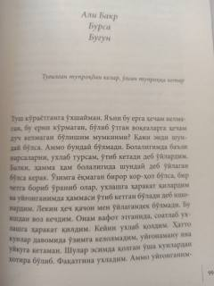

A3Qahramonning o'tmish sirlari va sirli topilmalar haqidagi ta'sirli hikoyasi.
Ushbu asar qahramonning o'tmish xotiralari, yo'qotishlar va sirli topilmalar atrofida kechadigan ichki kechinmalarini hikoya qiladi. Bosh qahramon bobosining uyida yashiringan sirli javon va undagi qadimiy kitoblar orqali o'z o'tmishi bilan bog'liq jumboqlarni yechishga harakat qiladi.